All itemsAlle items
Every item in the mod, with recipes, where to find it and what it is used for.
Elk voorwerp uit de mod, met recepten, waar je het vindt en waar je het voor gebruikt.
| NameNaam | KindSoort | RecipeRecept | Used inGebruikt in | AboutOver | |
|---|---|---|---|---|---|
| Aanmaakblokje | Item | yesja | Aanmaakblokje is an item in Guhs. Its in-game text (Dutch): Klik in een grillkoolframe (Guhmensie of...Klik in een grillkoolframe (Guhmensie of Barbecuether): de barbecue gaat aan! Werkt ook als aansteker. | ||
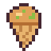 | Appeltaart-kaasijsje | Item | Appeltaart-kaasijsje is an item in Guhs. Its in-game text (Dutch): Alleen in de herfst: appeltaart met kaas...Alleen in de herfst: appeltaart met kaas en kruimels. Warm van binnen. | ||
| Babyflesje | Item | yesja | Babyflesje is an item in Guhs. Its in-game text (Dutch): Warme kaasmelk voor babyguhtjes.Warme kaasmelk voor babyguhtjes. Ook je eigen babyguh groeit er een beetje van. Slurp! | ||
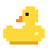 | Badeendje | Item | yesja | Badeendje is an item in Guhs. Its in-game text (Dutch): Zet hem op het water: hij dobbert en piept als je hem...Zet hem op het water: hij dobbert en piept als je hem aait | |
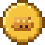 | Bakmunt | Item | Bakmunt is een item uit Guhs. | ||
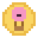 | Ballonmunt | Item | Ballonmunt is an item in Guhs. Its in-game text (Dutch): Voor elke ballonvlucht.Voor elke ballonvlucht. Te besteden bij Kapitein Wolkje | ||
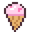 | Bloesem-kaasijsje | Item | Bloesem-kaasijsje is an item in Guhs. Its in-game text (Dutch): Alleen in de lente: roze bloesem met kaas.Alleen in de lente: roze bloesem met kaas. Blosjes en een warm gevoel. | ||
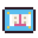 | Boekenbon | Item | Boekenbon is an item in Guhs. Its in-game text (Dutch): Te besteden bij de Bibliothecaris in de guhbibliotheekTe besteden bij de Bibliothecaris in de guhbibliotheek | ||
| Bouwboekje van de Timmerguh | Item | 3 | Since 3.0 the three guhhuisje recipes need the Bouwboekje van de Timmerguh in the crafting grid.Alle drie de Guhhuisjes staan erin: klein, medium en groot. | ||
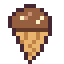 | Choco-kaasijsje | Item | Choco-kaasijsje is an item in Guhs. Its in-game text (Dutch): Chocolade-kaas: je voelt je ineens zo licht als...Chocolade-kaas: je voelt je ineens zo licht als een pluisje. | ||
| Chocoguhcaron | Item | yesja | Chocoguhcaron is een item uit Guhs. | ||
| Circuitbeker | Item | Circuitbeker is een item uit Guhs. | |||
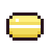 | Citroenguhcaron | Item | yesja | Citroenguhcaron is een item uit Guhs. | |
| Dakpluisje | Item | Dakpluisje is an item in Guhs. Its in-game text (Dutch): Geleend van de Timmerguh.Geleend van de Timmerguh. Past alleen op de doorzichtige plekjes van zijn oortjesdak. | |||
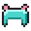 | Diamanten guhpantser | Item | yesja | 1 | Armour 11, toughness 2Pantser 11, taaiheid 2 |
| Discomunt | Item | Discomunt is een item uit Guhs. | |||
| Doolhofknabbel | Item | Doolhofknabbel is een item uit Guhs. | |||
| Drankje van Vahoegheid | Item | Drankje van Vahoegheid is een item uit Guhs. | |||
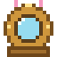 | Duikhelm | Item | Duikhelm is an item in Guhs. Its in-game text (Dutch): Adem onder water (en zie daar beneden ook wat beter).Adem onder water (en zie daar beneden ook wat beter). | ||
| Eendjesmunt | Item | Eendjesmunt is een item uit Guhs. | |||
| Elfstempel | Item | Elfstempel is een item uit Guhs. | |||
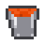 | Emmer kaasfrituursaus | Item | Emmer kaasfrituursaus is een item uit Guhs. | ||
| Emmer kaassaus | Item | Scoop kaas saus up and pour it wherever you like.Schep kaassaus op en giet het waar je maar wilt. | |||
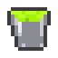 | Emmer maagzuur | Item | Emmer maagzuur is een item uit Guhs. | ||
| Emmer met guhvis | Item | Emmer met guhvis is een item uit Guhs. | |||
| Feest-theeservies | Item | Feest-theeservies is an item in Guhs. Its in-game text (Dutch): Het mooiste theeservies van Mevrouw...Het mooiste theeservies van Mevrouw Theelepel, geleend voor het Grote Knusfeest. Voorzichtig! | |||
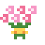 | Feestboeket | Item | yesja | Feestboeket is an item in Guhs. Its in-game text (Dutch): Voor het Grote Knusfeest van Burgemeester Vadsema.Voor het Grote Knusfeest van Burgemeester Vadsema. VAHOEG! | |
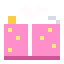 | Feestkapselset | Item | Feestkapselset is an item in Guhs. Its in-game text (Dutch): Speldjes, strikjes en glitterspray voor de...Speldjes, strikjes en glitterspray voor de feestkapsels. Breng het naar Burgemeester Vadsema! | ||
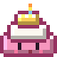 | Feesttaart | Item | Feesttaart is an item in Guhs. Its in-game text (Dutch): Drie lagen vadsig geluk, in een roze doos met een...Drie lagen vadsig geluk, in een roze doos met een strik | ||
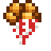 | Gefrituurde kaasknabbels | Item | Heals a tamed guh to full health instantly. Made in the frying pan.Maakt een tamme guh meteen helemaal beter. Gemaakt in de koekenpan. | ||
| Gegrilde kaasknabbelsaté | Item | yesja | Gegrilde kaasknabbelsaté is een item uit Guhs. | ||
| Geheim briefje | Item | Geheim briefje is een item uit Guhs. | |||
| Gepolijst guhsteentje | Item | 1 | Gepolijst guhsteentje is an item in Guhs. Its in-game text (Dutch): Glad en glimmend gepoetst door een...Glad en glimmend gepoetst door een Sjokkel. Vier ervan maken een guhsteentjespad. | ||
| Gestolen kaasknabbel | Item | Gestolen kaasknabbel is an item in Guhs. Its in-game text (Dutch): Teruggevonden in het doolhof!Teruggevonden in het doolhof! Breng hem naar de uitgang (Meneer Vadskronkel zorgt dat hij terugkomt bij de... | |||
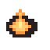 | Gloeiend kooltje | Item | Gloeiend kooltje is een item uit Guhs. | ||
| Gloeikoolgruis | Item | 1 | Gloeikoolgruis is een item uit Guhs. | ||
| Gloeister | Item | 1 | Gloeister is een item uit Guhs. | ||
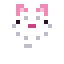 | Golfballetje | Item | Golfballetje is een item uit Guhs. | ||
| Gouden Guhvis | Item | Gouden Guhvis is an item in Guhs. Its in-game text (Dutch): Legendarisch!Legendarisch! Alleen de gelukkigste vissers zien er ooit een | |||
| Gouden kaasknabbel | Item | Gouden kaasknabbel is an item in Guhs. Its in-game text (Dutch): Uit de lucht gevallen bij een kaasregen.Uit de lucht gevallen bij een kaasregen. Geen wilde guh kan hem weerstaan: meteen tam! | |||
| Gouden smulknabbel | Item | Gouden smulknabbel is een item uit Guhs. | |||
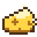 | Goudkaas | Item | Goudkaas is an item in Guhs. Its in-game text (Dutch): Zeldzaam en goudgeel.Zeldzaam en goudgeel. De kaaskluis gaat open voor 2 stuks | ||
| Grillguhs geheime recept | Item | 1 | Grillguhs geheime recept is an item in Guhs. Its in-game text (Dutch): Met houtskool, vuursteen en een...Met houtskool, vuursteen en een kaasknabbel maak je er Aanmaakblokjes mee. | ||
| Grillspies | Item | 2 | Grillspies is een item uit Guhs. | ||
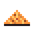 | Grillspiespoeder | Item | yesja | Grillspiespoeder is een item uit Guhs. | |
| Guh-ballon | Item | yesja | Guh-ballon is an item in Guhs. Its in-game text (Dutch): Voor een guhfeestjeVoor een guhfeestje | ||
| Guh-belletje | Item | Guh-belletje is an item in Guhs. Its in-game text (Dutch): Onderdeel van de kapotte slee (guhdorpen)Onderdeel van de kapotte slee (guhdorpen) | |||
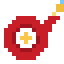 | Guh-brandslang | Item | Guh-brandslang is an item in Guhs. Its in-game text (Dutch): Houd rechtsklik ingedrukt om te spuiten.Houd rechtsklik ingedrukt om te spuiten. Te vadsige vuurtjes gaan er vanzelf van uit | ||
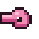 | Guh-buikfluitje | Item | Takes you to your guh stomach and back (so does the G key). A reward from Mother Vadsig.Blaas erop (of druk op G) om naar je guhmaag te reizen en terug | ||
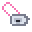 | Guh-fluitje | Item | yesja | Guh-fluitje is an item in Guhs. Its in-game text (Dutch): Fluit je laatste liedje: alle guhs in de buurt...Fluit je laatste liedje: alle guhs in de buurt zingen mee (en de tuintjes groeien ervan). | |
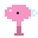 | Guh-föhn | Item | yesja | Guh-föhn is an item in Guhs. Its in-game text (Dutch): Rechtermuis ingedrukt houden op een gespoelde guh:...Rechtermuis ingedrukt houden op een gespoelde guh: droog, pluizig en glanzend! | |
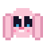 | Guh-konijntje | Item | Guh-konijntje is an item in Guhs. Its in-game text (Dutch): Een opgepakt guh-konijntje (met naam en al).Een opgepakt guh-konijntje (met naam en al). Rechtsklik op een blok: hop, eraf! | ||
| Guh-kristalverrekijker | Item | yesja | A spyglass with a guh crystal lens. Use it and every rare guh within 64 blocks glows for 30 seconds — through...Gebruik hem: zeldzame guhs binnen 64 blokken gaan gloeien | ||
| Guh-muziekplaat | Item | Guh music: at the guh picnic a jukebox plays the guh record Ze hangen aan me veh as soon as you come near.Guhmuziek: bij de guh-picknick speelt een jukebox de guhplaat Ze hangen aan me veh zodra je in de buurt komt. | |||
| Guh-schaatsen | Item | Guh-schaatsen is an item in Guhs. Its in-game text (Dutch): Geleend van Schaatsmeester Guhglij.Geleend van Schaatsmeester Guhglij. Houd ze vast en glij over het ijs! | |||
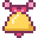 | Guhbel | Item | yesja | Guhbel is an item in Guhs. Its in-game text (Dutch): Tingeling! Een gouden belletje met guhoortjes.Tingeling! Een gouden belletje met guhoortjes. | |
| Guhbloementhee | Item | Guhbloementhee is an item in Guhs. Its in-game text (Dutch): Roze thee van guhbloemetjes.Roze thee van guhbloemetjes. Zo gezellig, anderhalve minuut lang! | |||
| Guhbloemetje | Item | 2 | Guhbloemetje is an item in Guhs. Its in-game text (Dutch): Een roze bloemetje dat terugkijkt.Een roze bloemetje dat terugkijkt. Vijf maken een feestboeket | ||
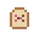 | Guhbloemzaadjes | Item | yesja | Guhbloemzaadjes is an item in Guhs. Its in-game text (Dutch): Groeit uit tot een guhbloem (met een gezichtje!)Groeit uit tot een guhbloem (met een gezichtje!) | |
| Guhborstel | Item | yesja | Guhborstel is an item in Guhs. Its in-game text (Dutch): Borstel de boerderijdieren: pluizig is gelukkigBorstel de boerderijdieren: pluizig is gelukkig | ||
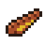 | Guhbraadworst | Item | Guhbraadworst is een item uit Guhs. | ||
| Guhcroissant | Item | Guhcroissant is an item in Guhs. Its in-game text (Dutch): Een halvemaan van bladerdeeg met kaas.Een halvemaan van bladerdeeg met kaas. Hij kijkt je lief aan. | |||
| Guhcupcake | Item | yesja | A little cake with pink frosting.Een taartje met roze glazuur. | ||
| Guhdex | Item | yesja | Guhdex is an item in Guhs. Its in-game text (Dutch): Alle guhs die je hebt gezien en getemdAlle guhs die je hebt gezien en getemd | ||
| Guhgieter | Item | yesja | Guhgieter is an item in Guhs. Its in-game text (Dutch): Rechtsklik op een tuintje: water! Leeg?Rechtsklik op een tuintje: water! Leeg? Vul hem bij water. | ||
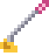 | Guhgolfclub (geleend) | Item | Guhgolfclub (geleend) is an item in Guhs. Its in-game text (Dutch): Houd rechtsklik ingedrukt bij je bal om...Houd rechtsklik ingedrukt bij je bal om de krachtbalk op te laden, kijk waar hij heen moet en laat los om te... | ||
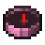 | Guhgrotkompas | Item | Guhgrotkompas is an item in Guhs. Its in-game text (Dutch): Wijst naar de middenkamer van de dichtstbijzijnde...Wijst naar de middenkamer van de dichtstbijzijnde guhgrot | ||
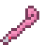 | Guhguhtje-staartje (geleend) | Item | Guhguhtje-staartje (geleend) is een item uit Guhs. | ||
| Guhkermisbon | Item | Guhkermisbon is een item uit Guhs. | |||
| Guhkristal | Item | 8 | Guhkristal is een item uit Guhs. | ||
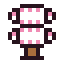 | Guhkurkentrekker (sleerail) | Item | yesja | Guhkurkentrekker (sleerail) is een item uit Guhs. | |
 | Guhmensie-superkompas | Item | yesja | Guhmensie-superkompas is an item in Guhs. Its in-game text (Dutch): Rechtsklik: kies wat je zoekt.Rechtsklik: kies wat je zoekt. Hij wijst naar de dichtstbijzijnde (in deze dimensie). | |
| Guhpuffer | Item | Guhpuffer is an item in Guhs. Its in-game text (Dutch): Blaast zich op als hij schrikt. VAHOEG!Blaast zich op als hij schrikt. VAHOEG! | |||
| Guhshampoo | Item | yesja | Guhshampoo is an item in Guhs. Its in-game text (Dutch): Op je tamme guh bij een guh-wastobbe: stap 1 van het...Op je tamme guh bij een guh-wastobbe: stap 1 van het wasritueel | ||
| Guhslee | Item | yesja | Guhslee is an item in Guhs. Its in-game text (Dutch): Zet hem op een sleerail.Zet hem op een sleerail. Rechtsklik tijdens het rijden: het bedieningspaneel | ||
| Guhslijmbal | Item | yesja | 4 | Guhslijmbal is een item uit Guhs. | |
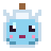 | Guhsprongdrankje | Item | Guhsprongdrankje is een item uit Guhs. | ||
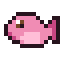 | Guhvis | Item | 1 | Guhvis is een item uit Guhs. | |
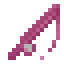 | Guhvis-hengel (geleend) | Item | Guhvis-hengel (geleend) is an item in Guhs. Its in-game text (Dutch): Geleend van de Visguh voor de...Geleend van de Visguh voor de wedstrijd. Na afloop zwemt hij vanzelf terug! | ||
| Guhvleugels | Item | Guhvleugels is an item in Guhs. Its in-game text (Dutch): Kleine Enderguhvleugeltjes om mee te zweven.Kleine Enderguhvleugeltjes om mee te zweven. Repareren met Mika's vet | |||
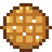 | Guhwafel | Item | Guhwafel is an item in Guhs. Its in-game text (Dutch): Een ronde wafel met suiker.Een ronde wafel met suiker. Onder water blijf je er lang van ademen. | ||
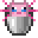 | Guhxolotl-emmertje | Item | Guhxolotl-emmertje is an item in Guhs. Its in-game text (Dutch): Rechtsklik op een blok: plons, daar zwemt...Rechtsklik op een blok: plons, daar zwemt hij weer! (Sluipen: zonder water) | ||
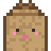 | Guhzak (geleend) | Item | Guhzak (geleend) is an item in Guhs. Its in-game text (Dutch): Voor het zaklopen: spring om te hoppen!Voor het zaklopen: spring om te hoppen! | ||
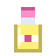 | Haarverf (citroen) | Item | yesja | Haarverf (citroen) is een item uit Guhs. | |
| Haarverf (hemelsblauw) | Item | yesja | Haarverf (hemelsblauw) is een item uit Guhs. | ||
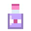 | Haarverf (lavendel) | Item | yesja | Haarverf (lavendel) is een item uit Guhs. | |
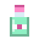 | Haarverf (mint) | Item | yesja | Haarverf (mint) is een item uit Guhs. | |
| Haarverf (perzik) | Item | yesja | Haarverf (perzik) is een item uit Guhs. | ||
| Haarverf (regenboog) | Item | Haarverf (regenboog) is an item in Guhs. Its in-game text (Dutch): Regenbooghaar blijft van kleur veranderen,...Regenbooghaar blijft van kleur veranderen, net als een regenboogguh. Alleen bij Krulletje! | |||
| Haarverf (roze) | Item | yesja | Haarverf (roze) is een item uit Guhs. | ||
| Haarverf (zilver) | Item | yesja | Haarverf (zilver) is een item uit Guhs. | ||
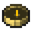 | Heiligdomkompas | Item | Heiligdomkompas is an item in Guhs. Its in-game text (Dutch): Wijst naar het Vadsig-heiligdom van Moeder...Wijst naar het Vadsig-heiligdom van Moeder Vadsig (Guhmensie). Te koop bij de vadstemmer. | ||
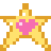 | Herinnering | Item | Herinnering is an item in Guhs. Its in-game text (Dutch): Een gloeiend sterretje vol lieve herinneringen.Een gloeiend sterretje vol lieve herinneringen. Njeg <3 | ||
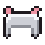 | IJzeren guhpantser | Item | yesja | IJzeren guhpantser is een item uit Guhs. | |
| Kaas Knabbels | Item | yesja | 47 | Tames, heals and breeds guhs. Also a quick snack. Found in kaasknabbel ores.Temt, geneest en fokt guhs. Ook een snel hapje. Te vinden in kaasknabbel-ertsen. | |
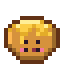 | Kaasbolletje | Item | Kaasbolletje is an item in Guhs. Its in-game text (Dutch): Een zacht bolletje met gesmolten kaas.Een zacht bolletje met gesmolten kaas. Maakt je weer heel. | ||
| Kaasbrok | Item | 1 | Kaasbrok is een item uit Guhs. | ||
| Kaasfondguh | Item | yesja | A big warm bowl of melted kaas knabbels. Very filling.Een grote warme kom gesmolten kaasknabbels. Heel vullend. | ||
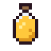 | Kaashoning | Item | From a full knabbelkorf. Like honey: cures poison.Uit een volle knabbelkorf. Net als honing: geneest vergiftiging. | ||
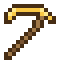 | Kaashouweel | Item | Kaashouweel is an item in Guhs. Its in-game text (Dutch): Hakt kaasaders twee keer zo snel. Vahoeg!Hakt kaasaders twee keer zo snel. Vahoeg! | ||
| Kaasknabbelsaté | Item | yesja | 1 | Kaasknabbelsaté is een item uit Guhs. | |
| Kaasknabbelzaadjes | Item | 1 | Kaasknabbelzaadjes is een item uit Guhs. | ||
| Kaaskorrel | Item | yesja | 1 | Kaaskorrel is een item uit Guhs. | |
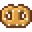 | Kaaskrakeling | Item | Kaaskrakeling is an item in Guhs. Its in-game text (Dutch): Een gevlochten krakeling van kaasdeeg met suiker.Een gevlochten krakeling van kaasdeeg met suiker. Handjes vlug! | ||
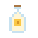 | Kaasmelk | Item | Kaasmelk is an item in Guhs. Its in-game text (Dutch): Romig en een beetje kazig. Van een blije guhkoe. Moeh!Romig en een beetje kazig. Van een blije guhkoe. Moeh! | ||
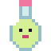 | Kaasmelkdrankje | Item | Kaasmelkdrankje is an item in Guhs. Its in-game text (Dutch): Snotkruidjes en kaasmelk, gemengd in de...Snotkruidjes en kaasmelk, gemengd in de mengketel. Goed tegen elke snotneus | ||
| Kaasmelkthee | Item | Kaasmelkthee is an item in Guhs. Its in-game text (Dutch): Romig en zacht. Spoelt alle nare effecten weg!Romig en zacht. Spoelt alle nare effecten weg! | |||
| Kaasvis | Item | Kaasvis is an item in Guhs. Its in-game text (Dutch): Zit vol gaatjes en ruikt naar kaasknabbelsZit vol gaatjes en ruikt naar kaasknabbels | |||
| Kappersschaar | Item | Kappersschaar is an item in Guhs. Its in-game text (Dutch): Geleend van Kapper Krulletje.Geleend van Kapper Krulletje. Rechtsklik een klant om te knippen. | |||
| Katapultster | Item | Katapultster is een item uit Guhs. | |||
| Kermiskompas | Item | Kermiskompas is an item in Guhs. Its in-game text (Dutch): Wijst naar de Guhkermis in de Guhmensie.Wijst naar de Guhkermis in de Guhmensie. Te koop bij de vadstemmer. | |||
| Knabbelbal | Item | yesja | A fluffy ball with guh ears and a kaasknabbel in its tummy window.Een pluizige bal met guhoortjes en een kaasknabbel achter zijn buikraampje. | ||
| Knabbelbessen | Item | 2 | Knabbelbessen is an item in Guhs. Its in-game text (Dutch): Babyguhs zijn er dol op: wilde babyguhs tem je er...Babyguhs zijn er dol op: wilde babyguhs tem je er makkelijk mee | ||
| Knabbelbessentaartje | Item | yesja | Knabbelbessentaartje is een item uit Guhs. | ||
| Knabbelbroodje | Item | Knabbelbroodje is an item in Guhs. Its in-game text (Dutch): Knapperig broodje met knabbelkruimels.Knapperig broodje met knabbelkruimels. Maakt je snel! | |||
| Knabbelei | Item | Knabbelei is an item in Guhs. Its in-game text (Dutch): Een eitje van een blij knabbelkippetje, knapperig als...Een eitje van een blij knabbelkippetje, knapperig als een kaasknabbel | |||
| Knabbelgraan | Item | 1 | Knabbelgraan is an item in Guhs. Its in-game text (Dutch): Knapperig graan voor het knabbeldeeg van de bakkerKnapperig graan voor het knabbeldeeg van de bakker | ||
| Knabbelkoekje | Item | Knabbelkoekje is an item in Guhs. Its in-game text (Dutch): Een klein koekje voor tussendoor.Een klein koekje voor tussendoor. Snel op, snel weg! | |||
| Knabbelkristal | Item | yesja | Knabbelkristal is an item in Guhs. Its in-game text (Dutch): Vol gestolen kaasknabbels.Vol gestolen kaasknabbels. Vier op de knabbelsokkels roepen Opper-Mika terug | ||
| Knabbelkroon | Item | Knabbelkroon is an item in Guhs. Its in-game text (Dutch): De kroon van Opper-Mika. Nu van jou. VAHOEG!De kroon van Opper-Mika. Nu van jou. VAHOEG! | |||
| Knabbelmeel | Item | Knabbelmeel is an item in Guhs. Its in-game text (Dutch): Vers gemalen in een guh-molentje.Vers gemalen in een guh-molentje. In de knabbeloven bak je er dubbel zoveel mee! | |||
| Knabbelspijker (geleend) | Item | Knabbelspijker (geleend) is an item in Guhs. Its in-game text (Dutch): Hij bungelt aan je guhriem.Hij bungelt aan je guhriem. Plonk hem in de kaasmelkfles! | |||
| Knabbelthee | Item | Knabbelthee is an item in Guhs. Its in-game text (Dutch): Thee van kaasknabbels: goudbruin, knapperig van...Thee van kaasknabbels: goudbruin, knapperig van smaak en een beetje gezellig. | |||
| Knabbeltompouce | Item | Knabbeltompouce is an item in Guhs. Its in-game text (Dutch): Roze glazuur, gele room, twee knapperige...Roze glazuur, gele room, twee knapperige laagjes. Stevig spul! | |||
| Knabbelvoer | Item | yesja | Knabbelvoer is an item in Guhs. Its in-game text (Dutch): Lekker voor schaapjes, kippetjes en koeien (en...Lekker voor schaapjes, kippetjes en koeien (en stiekem ook voor guhs) | ||
| Knabbelzaadjes | Item | yesja | Knabbelzaadjes is an item in Guhs. Its in-game text (Dutch): Groeit uit tot een knabbelplantje vol...Groeit uit tot een knabbelplantje vol knabbelgraan | ||
| Knuffeldekentje | Item | yesja | Knuffeldekentje is an item in Guhs. Its in-game text (Dutch): Een zacht dekentje van pluiswol.Een zacht dekentje van pluiswol. Stop een babyguhtje ermee in: zzz... | ||
| Knusfeestlijstje | Item | Knusfeestlijstje is an item in Guhs. Its in-game text (Dutch): Rechtsklik: welke feesttaakjes staan er nog...Rechtsklik: welke feesttaakjes staan er nog open? | |||
| Kokosmelk | Item | yesja | Kokosmelk is an item in Guhs. Its in-game text (Dutch): Koel en zoet, uit een echte Guhwai'i-kokosnoot.Koel en zoet, uit een echte Guhwai'i-kokosnoot. Je voelt je meteen een beetje beter. | ||
| Kommetje snert | Item | Kommetje snert is an item in Guhs. Its in-game text (Dutch): Erwtensoep zo dik dat de lepel blijft staan.Erwtensoep zo dik dat de lepel blijft staan. Dan schaats je vanzelf harder! | |||
| Koningskompas | Item | Koningskompas is an item in Guhs. Its in-game text (Dutch): Wijst naar het legendarische guhkasteel...Wijst naar het legendarische guhkasteel (Guhmensie). Het kan heel ver weg zijn! | |||
| Krulmunt | Item | Krulmunt is een item uit Guhs. | |||
| Labnotitie | Item | Labnotitie is an item in Guhs. Its in-game text (Dutch): Rechtsklik om te lezen.Rechtsklik om te lezen. Een krabbel van Professor Knabbelkloon. | |||
| Leenhouweel van de Mijnguh | Item | Leenhouweel van de Mijnguh is an item in Guhs. Its in-game text (Dutch): Alleen voor in de kaasmijn: de...Alleen voor in de kaasmijn: de Mijnguh neemt hem terug als je weggaat | |||
| Lepel met knabbelei (geleend) | Item | Lepel met knabbelei (geleend) is an item in Guhs. Its in-game text (Dutch): Rustig lopen, anders valt hij!Rustig lopen, anders valt hij! Juf Vahoegsakee wil haar lepel terug. | |||
| Liedjesboekje | Item | yesja | Liedjesboekje is an item in Guhs. Its in-game text (Dutch): Zes guhliedjes, met de staafjes van de...Zes guhliedjes, met de staafjes van de guh-xylofoon. Oefenen mag altijd! | ||
| Lilo's surfplankje | Item | Lilo's surfplankje is an item in Guhs. Its in-game text (Dutch): Met dit plankje surf je met Lilo-guh mee.Met dit plankje surf je met Lilo-guh mee. Pas op voor het schuim, njeg! | |||
| Marshmallowknabbel | Item | yesja | Marshmallowknabbel is een item uit Guhs. | ||
| Mepmunt | Item | Mepmunt is een item uit Guhs. | |||
| Mika's vet | Item | 2 | Dropped by Mika. One jar gives the frying pan fat for 64 kaas knabbels.Valt van Mika. Een pot geeft de koekenpan vet voor 64 kaasknabbels. | ||
| Mika-meerval | Item | Mika-meerval is an item in Guhs. Its in-game text (Dutch): Chagrijnige snorharen.Chagrijnige snorharen. Kost punten en smaakt naar Mika. Bah! | |||
| Mika-mephamer (geleend) | Item | Mika-mephamer (geleend) is an item in Guhs. Its in-game text (Dutch): Geleend van de Mepguh: na het potje...Geleend van de Mepguh: na het potje gaat hij terug. Linksklik op de Mika's! | |||
| Mika-mepper | Item | The Mika-jager's swatter. An iron-level sword that never breaks and hits Mikas (Nether Mikas and Big Mika...Slaat Mika's drie keer zo hard | |||
| Mika-spoorkompas | Item | The two quest compasses: to the nearest Mika camp (Guhmension), and to the nearest guh picnic (Guhmension or...Wijst naar het dichtstbijzijnde Mika-kamp | |||
| Mika-traan | Item | 2 | Mika-traan is een item uit Guhs. | ||
| Mint-guhcaron | Item | yesja | Mint-guhcaron is een item uit Guhs. | ||
| Moeraskaas | Item | 3 | Moeraskaas is een item uit Guhs. | ||
| Munt-kaasijsje | Item | Munt-kaasijsje is an item in Guhs. Its in-game text (Dutch): Fris munt met kaasschilfers.Fris munt met kaasschilfers. Je rent er even harder van. | |||
| Netherieten guhpantser | Item | yesja | Armour 11, toughness 3, knockback resistancePantser 11, taaiheid 3, terugslagbestendig | ||
| Oog van Vadsig | Item | yesja | 1 | Oog van Vadsig is an item in Guhs. Its in-game text (Dutch): Gooi hem in de Guhmensie: hij vliegt naar de...Gooi hem in de Guhmensie: hij vliegt naar de dichtstbijzijnde Knabbelkelder | |
| Opgepakte guh | Item | Your guh, in your pocket. Put it down on a block, or into a Guh Wheel.Je guh, in je zak. Zet hem op een blok, of in een guhrad. | |||
| Parel | Item | 1 | Parel is an item in Guhs. Its in-game text (Dutch): Uit de reuzenschelpen van de Guhbubbel.Uit de reuzenschelpen van de Guhbubbel. De Zeemeerguh neemt ze aan als geld. | ||
| Pieppiepmuisje | Item | Now and then your tamed muisje wants to play: "... wil verstoppertje spelen... piep!Rechtsklik op een blok: het muisje hopt eraf. Rechtsklik in de lucht: op je schouder! Piep. | |||
| Pluisbal (geleend) | Item | Pluisbal (geleend) is een item uit Guhs. | |||
| Pluisballen (geleend) | Item | Pluisballen (geleend) is an item in Guhs. Its in-game text (Dutch): Sta bij de katapult, kijk waar hij heen...Sta bij de katapult, kijk waar hij heen moet, houd rechtsklik ingedrukt om het elastiek aan te trekken en... | |||
| Pluiseekhoorntje | Item | Pluiseekhoorntje is an item in Guhs. Its in-game text (Dutch): Rechtsklik op een blok: het eekhoorntje...Rechtsklik op een blok: het eekhoorntje springt eraf. Rechtsklik in de lucht: op je schouder! | |||
| Pluisegeltje | Item | Pluisegeltje is an item in Guhs. Its in-game text (Dutch): Een opgepakt pluisegeltje (met naam en al).Een opgepakt pluisegeltje (met naam en al). Rechtsklik op een blok: het snuffelt er weer vanaf. | |||
| Pluismuffin | Item | Pluismuffin is an item in Guhs. Its in-game text (Dutch): Zo pluizig dat je er zachtjes van zweeft.Zo pluizig dat je er zachtjes van zweeft. | |||
| Pluisveertje | Item | Pluisveertje is an item in Guhs. Its in-game text (Dutch): Zo zacht als een wolkje. Van een Pluisvinkje!Zo zacht als een wolkje. Van een Pluisvinkje! | |||
| Pluiswol | Item | yesja | 1 | Pluiswol is an item in Guhs. Its in-game text (Dutch): Superzacht, van een blij guhschaapjeSuperzacht, van een blij guhschaapje | |
| Poepschilly | Item | Poepschilly is an item in Guhs. Its in-game text (Dutch): Een opgepakte Poepschilly (met naam en al).Een opgepakte Poepschilly (met naam en al). Rechtsklik op een blok: hij waggelt er weer vanaf. Blub! | |||
| Raceprijsje | Item | Raceprijsje is een item uit Guhs. | |||
| Recept: Roze Guh Koek | Item | There is no crafting recipe. The recipe Recept: Roze Guh Koek lies in the treasure chest of the...Rechtsklik om het geheime recept te leren. Daarna bak je hem in de Knabbeloven: zoetdeeg, plaatje, glazuur. | |||
| Reisguh-fluitje | Item | yesja | Reisguh-fluitje is an item in Guhs. Its in-game text (Dutch): Fluit op een plek in de Guhmensie: daar komt...Fluit op een plek in de Guhmensie: daar komt een Reisguh zitten, je eigen reispunt | ||
| Reserve-ukelele van 626-guh | Item | yesja | The button Ukelele (and the emote, only for him): he strums with all four arms. Aloha, njeg!Tokkel erop (rechtsklik): alle guhs om je heen gaan dansen. En een 626-guh speelt mee! | ||
| Rookloopdrankje | Item | Rookloopdrankje is een item uit Guhs. | |||
| Roze guhcaron | Item | yesja | In four colours: pink, mint, lemon and chocolate. Quick to eat.In vier kleuren: roze, mint, citroen en chocolade. Snel op te eten. | ||
| Roze kaasijsje | Item | Roze kaasijsje is an item in Guhs. Its in-game text (Dutch): Aardbei-kaas. Je krijgt er blosjes van.Aardbei-kaas. Je krijgt er blosjes van. | |||
| Roze lint | Item | Roze lint is an item in Guhs. Its in-game text (Dutch): Onderdeel van de kapotte slee (kleermaker)Onderdeel van de kapotte slee (kleermaker) | |||
| Roze njegforel | Item | Roze njegforel is an item in Guhs. Its in-game text (Dutch): Zeldzaam en snel. Zegt 'njeg' als je hem vangtZeldzaam en snel. Zegt 'njeg' als je hem vangt | |||
| Schelpje | Item | 2 | Fished up by a huisje guh. Hold it to your ear (right-click) and listen to the Guhzee: Ruisss...Opgevist door een huisjesguh. Houd hem aan je oor (rechtsklik) en luister naar de Guhzee. | ||
| Schelpjesmunt | Item | Schelpjesmunt is an item in Guhs. Its in-game text (Dutch): Verdiend met surfen en hula op Guhwai'i.Verdiend met surfen en hula op Guhwai'i. Tikiguh ruilt ze voor mooie Tiki-spulletjes. | |||
| Schilly | Item | Schilly is an item in Guhs. Its in-game text (Dutch): Een opgepakte Schilly (met naam en al).Een opgepakte Schilly (met naam en al). Rechtsklik op een blok: daar is Schilly weer. Minihoofdje! | |||
| Schone luier | Item | yesja | Schone luier is an item in Guhs. Its in-game text (Dutch): Fris en zacht.Fris en zacht. Babyguhtjes worden daar zo vahoeg van! | ||
| Showrozet | Item | Showrozet is an item in Guhs. Its in-game text (Dutch): Gewonnen op de catwalk van het Guh Beauty Theater.Gewonnen op de catwalk van het Guh Beauty Theater. Te besteden bij de Showguh. | |||
| Sjokkel | Item | Sjokkel is an item in Guhs. Its in-game text (Dutch): Een opgepakte Sjokkel (met naam en al).Een opgepakte Sjokkel (met naam en al). Hij zit lekker in zijn schelp. | |||
| Sjokkel-bessensapje | Item | Sjokkel-bessensapje is an item in Guhs. Its in-game text (Dutch): Zoete bessen, heel geduldig tot sapje...Zoete bessen, heel geduldig tot sapje gemaakt in de schelp van een Sjokkel. Slurp! Njeg. | |||
| Sjoelschijfje | Item | 1 | Sjoelschijfje is een item uit Guhs. | ||
| Sjoelschijven (geleend) | Item | Sjoelschijven (geleend) is an item in Guhs. Its in-game text (Dutch): Sta aan de kop van de sjoelbak, houd...Sta aan de kop van de sjoelbak, houd rechtsklik ingedrukt (de krachtbalk gaat op en neer), kijk waar hij heen... | |||
| Sledebelletje | Item | Sledebelletje is an item in Guhs. Its in-game text (Dutch): Tingeling! Verdiend bij de Nomguh-sledesprint.Tingeling! Verdiend bij de Nomguh-sledesprint. Steele-Mika ruilt ze voor winterspulletjes. | |||
| Sleeglijder | Item | Sleeglijder is an item in Guhs. Its in-game text (Dutch): Onderdeel van de kapotte slee (guhgrotten)Onderdeel van de kapotte slee (guhgrotten) | |||
| Sleerail (bocht) | Item | yesja | Sleerail (bocht) is een item uit Guhs. | ||
| Sleerail (helling) | Item | yesja | Sleerail (helling) is een item uit Guhs. | ||
| Sleerail (recht) | Item | yesja | Sleerail (recht) is een item uit Guhs. | ||
| Sluipknabbeldrankje | Item | Sluipknabbeldrankje is een item uit Guhs. | |||
| Smulmunt | Item | Smulmunt is een item uit Guhs. | |||
| Smulschaal (geleend) | Item | Smulschaal (geleend) is an item in Guhs. Its in-game text (Dutch): Geleend van de Smulguh: na het spel gaat...Geleend van de Smulguh: na het spel gaat hij terug | |||
| Sneeuw-kaasijsje | Item | Sneeuw-kaasijsje is an item in Guhs. Its in-game text (Dutch): Alleen in de winter: sneeuwwit vanille-kaas.Alleen in de winter: sneeuwwit vanille-kaas. Brr... en toch lekker. | |||
| Sneeuwguhkopje | Item | yesja | Sneeuwguhkopje is an item in Guhs. Its in-game text (Dutch): Zet me op twee sneeuwblokken!Zet me op twee sneeuwblokken! | ||
| Sneeuwslee | Item | The sneeuwslee is a reward of the Nomguh story: your own sled with four guh-sledehondjes (chibi guh huskies...Je eigen slee met vier guh-sledehondjes. Hup, hup, door de sneeuw! | |||
| Snotkruidje | Item | Snotkruidje is an item in Guhs. Its in-game text (Dutch): Voor in de mengketel. Niet aan snuiven, dan...Voor in de mengketel. Niet aan snuiven, dan... hatsjoe! | |||
| Speenmunt | Item | Speenmunt is an item in Guhs. Its in-game text (Dutch): De munt van de Knuffelcreche.De munt van de Knuffelcreche. Te besteden bij Juf Knuffel (en in de grijpmachine). | |||
| Spelenlintje | Item | Spelenlintje is een item uit Guhs. | |||
| Stempelkaart | Item | Stempelkaart is an item in Guhs. Its in-game text (Dutch): %s van de 11 stempels. Rechtsklik: de hele kaart.%s van de 11 stempels. Rechtsklik: de hele kaart. | |||
| Sterrenkoekje | Item | Sterrenkoekje is an item in Guhs. Its in-game text (Dutch): Een sterretje met roze glazuur: je ziet er 's...Een sterretje met roze glazuur: je ziet er 's nachts alles mee. | |||
| Sterrenstof | Item | Sterrenstof is an item in Guhs. Its in-game text (Dutch): Achtergelaten door een vallende ster.Achtergelaten door een vallende ster. Gooi het omhoog en doe een wens! | |||
| Stille knabbel | Item | yesja | Kaaskorrel + kaasknabbels + kaasmos = 2 stille knabbels. Eat one (always possible) for 90 seconds of Stil:...Kaaskorrel + kaasknabbels + kaasmos = 2 stille knabbels. Eet er een (kan altijd) voor 90 seconden Stil:... | ||
| Taartkruimels | Item | Taartkruimels is an item in Guhs. Its in-game text (Dutch): Een spoor van kruimels...Een spoor van kruimels... naar de dichtstbijzijnde guh-picknick (ook in de overworld) | |||
| Tankonderdeel | Item | Tankonderdeel is an item in Guhs. Its in-game text (Dutch): Bouw hem in bij de kloontank in de koepelhal...Bouw hem in bij de kloontank in de koepelhal (rechtsklik op de tank). | |||
| Theekruid | Item | 1 | Theekruid is an item in Guhs. Its in-game text (Dutch): Ruikt naar mint en kaasknabbels. Voor het theehuis!Ruikt naar mint en kaasknabbels. Voor het theehuis! | ||
| Theekruidthee | Item | Theekruidthee is an item in Guhs. Its in-game text (Dutch): Groen en fris, van theekruid uit je tuintje.Groen en fris, van theekruid uit je tuintje. Je knapt er even van op. | |||
| Theekruidzaadjes | Item | yesja | Theekruidzaadjes is an item in Guhs. Its in-game text (Dutch): Groeit uit tot een geurig bosje theekruidGroeit uit tot een geurig bosje theekruid | ||
| Theetaartje | Item | Theetaartje is an item in Guhs. Its in-game text (Dutch): Met een roze hartje en poedersuiker.Met een roze hartje en poedersuiker. Brengt geluk (en zin in thee). | |||
| Uitdagingskompas | Item | Uitdagingskompas is an item in Guhs. Its in-game text (Dutch): Wijst naar de kerkerhal van de...Wijst naar de kerkerhal van de dichtstbijzijnde uitdagende guhgrot | |||
| Vadsbaars | Item | Vadsbaars is an item in Guhs. Its in-game text (Dutch): De vadsigste vis van de Guhmensie. Zo vads!De vadsigste vis van de Guhmensie. Zo vads! | |||
| Vadsdonut | Item | Vadsdonut is an item in Guhs. Its in-game text (Dutch): Een ringetje met roze glazuur en spikkels.Een ringetje met roze glazuur en spikkels. Stuiter stuiter! | |||
| Vadsdrop (steile sleerail) | Item | yesja | Vadsdrop (steile sleerail) is een item uit Guhs. | ||
| Vadsig gebakken guhvis | Item | yesja | Vadsig gebakken guhvis is een item uit Guhs. | ||
| Vadsverdrijvend drankje | Item | yesja | Vadsverdrijvend drankje is an item in Guhs. Its in-game text (Dutch): Gooi het!Gooi het! Wie het raakt, voelt zich even onvahoeg | ||
| Vadsvlaai | Item | Vadsvlaai is an item in Guhs. Its in-game text (Dutch): Een hele kaasvlaai. Vadsig? Nee hoor: gewoon VAHOEG.Een hele kaasvlaai. Vadsig? Nee hoor: gewoon VAHOEG. | |||
| Vahoege kaasknabbelshake | Item | yesja | Clears all your effects, just like milk. You get the bottle back.Haalt al je effecten weg, net als melk. Je krijgt het flesje terug. | ||
| Vahoege sleebouwersboek | Item | 7 | Vahoege sleebouwersboek is an item in Guhs. Its in-game text (Dutch): Nodig (niet opgebruikt) om sleerails te...Nodig (niet opgebruikt) om sleerails te maken | ||
| Vahoege vads | Item | 2 | Vahoege vads is een item uit Guhs. | ||
| Vahoege-vadsbeenstukken | Item | yesja | Vahoege-vadsbeenstukken is een item uit Guhs. | ||
| Vahoege-vadsbijl | Item | yesja | 1 | Vahoege-vadsbijl is een item uit Guhs. | |
| Vahoege-vadsborstplaat | Item | yesja | Vahoege-vadsborstplaat is een item uit Guhs. | ||
| Vahoege-vadshelm | Item | yesja | Vahoege-vadshelm is een item uit Guhs. | ||
| Vahoege-vadshouweel | Item | yesja | 1 | Vahoege-vadshouweel is een item uit Guhs. | |
| Vahoege-vadslaarzen | Item | yesja | Vahoege-vadslaarzen is een item uit Guhs. | ||
| Vahoege-vadspaxel | Item | yesja | Vahoege-vadspaxel is een item uit Guhs. | ||
| Vahoege-vadsschep | Item | yesja | 1 | Vahoege-vadsschep is een item uit Guhs. | |
| Vahoege-vadsschoffel | Item | yesja | Vahoege-vadsschoffel is een item uit Guhs. | ||
| Vahoege-vadsstaaf | Item | yesja | 10 | Vahoege-vadsstaaf is een item uit Guhs. | |
| Vahoege-vadszwaard | Item | yesja | As good as diamond: the same mining speed, damage and armour (plus armour toughness 2).Zo goed als diamant: net zo snel hakken, net zoveel schade en pantser (plus pantsertaaiheid 2). | ||
| Vahoegschans (sleerail) | Item | yesja | Vahoegschans (sleerail) is een item uit Guhs. | ||
| Verloren guh-taart | Item | Verloren guh-taart is an item in Guhs. Its in-game text (Dutch): De taart van Moeder Vadsig. Niet opeten!De taart van Moeder Vadsig. Niet opeten! | |||
| Verstopguhticket | Item | Verstopguhticket is een item uit Guhs. | |||
| Verstopkompas | Item | Verstopkompas is an item in Guhs. Its in-game text (Dutch): Wijst naar het verstopguhhuis in de Guhmensie.Wijst naar het verstopguhhuis in de Guhmensie. Te koop bij de vadstemmer. | |||
| Visbon | Item | Visbon is een item uit Guhs. | |||
| Warme chocovet | Item | Warme chocovet is an item in Guhs. Its in-game text (Dutch): Dikke warme chocomelk met slagroom.Dikke warme chocomelk met slagroom. Warm vanbinnen = even extra vahoeg! | |||
| Wensster | Item | 1 | Wensster is an item in Guhs. Its in-game text (Dutch): Rechtsklik en doe een wens!Rechtsklik en doe een wens! (Of betaal Professor Sterretje ermee) | ||
| Wolkensuikerspin | Item | yesja | Wolkensuikerspin is een item uit Guhs. | ||
| Zonnetje-kaasijsje | Item | Zonnetje-kaasijsje is an item in Guhs. Its in-game text (Dutch): Alleen in de zomer: citroen-kaas met een...Alleen in de zomer: citroen-kaas met een zonnetje erop. Zweverig en snel! |